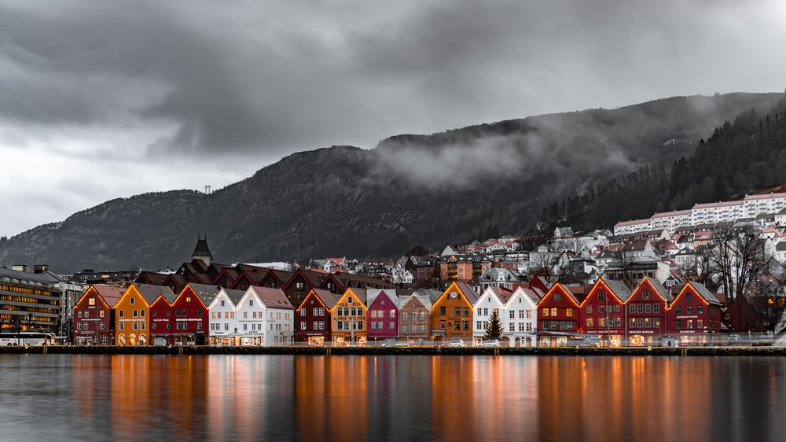
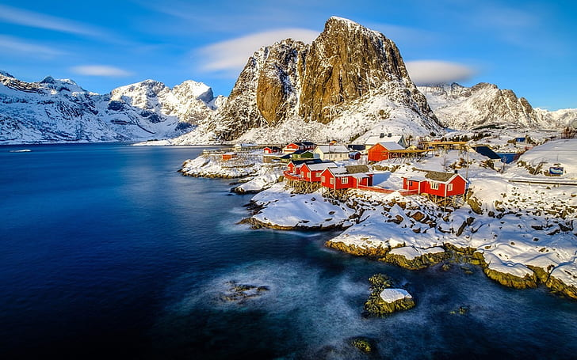

Sajek Valley is the most popular travel destination for people to travel in Bangladesh. Sajek is the largest union in Bangladesh, located in Baghaichari Upazila of Rangamati district, 1800 feet above sea level. Sajek’s location is in the Rangamati district, but due to geographical reasons, it is much easier to travel from Dighinala in Khagrachari to Sajek. Sajek’s distance from the Khagrachari district is 70 km, and the small river is 40 km.
lets change more
 